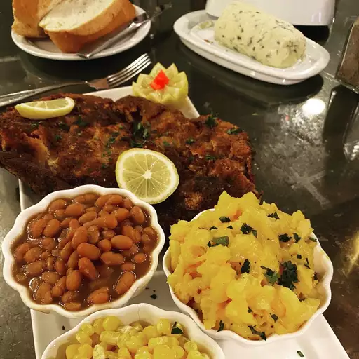

Country Fried Steak

Description:
This country fried steak recipe was originally my grandmother's, but I thought it was really bland so I added seasoning to it.
Serve it with country gravy and mashed potatoes.
Ingredients:
- 1 egg
- ¼ cup milk
- 1 cup all-purpose flour
- 1 (4 ounce) packet saltine crackers, crushed
- 1 ½ teaspoons seasoned salt
- 1 ½ teaspoons onion powder
- 1 ½ teaspoons garlic powder
- 1 ½ teaspoons Montreal steak seasoning
- 4 (4 ounce) cube steaks
- 2 tablespoons vegetable oil
Directions:
- Whisk together the egg and milk in a shallow bowl; set aside.
- Whisk together the flour, crushed saltines, seasoned salt, onion powder, garlic powder, and steak seasoning. Dip the steaks in the egg mixture, then press each steak in the flour mixture. Pat the flour mixture into the steaks to coat them completely.
- Heat oil in a large skillet over medium-high heat, and fry the steaks until they are golden brown, firm, hot in the center, and just turning from pink to grey, about 4 minutes per side. An instant-read thermometer inserted into the center should read 160 degrees F (70 degrees C).